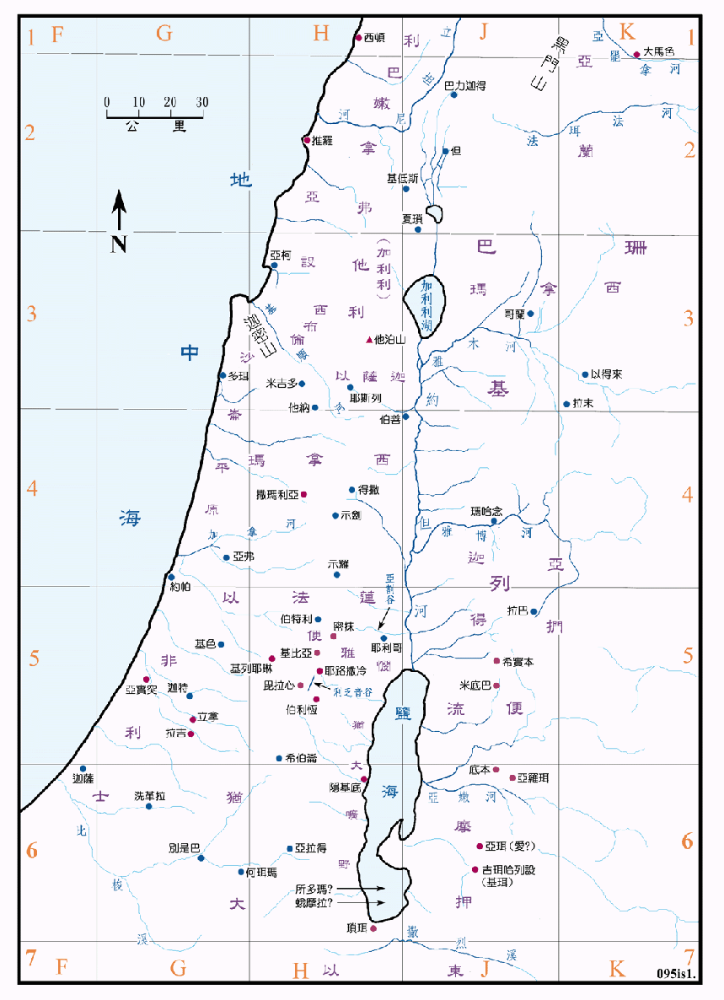

以赛亚是南国犹大的先知，自 740BC 开始事奉直到 681BC，总共约有六十年，历经犹大的四个王。在此期间，亚述快速的壮大，在 732BC 灭亚兰，722BC 灭北国以色列。按亚述的文献记载，当时亚述也攻下南国的四十馀城，几乎消灭了犹大，耶路撒冷城数度岌岌可危。犹大虽然幸存，并保持独立，但却不断的受到亚述的威胁，在危急之时，犹大有时投靠亚述；有时又投靠埃及，但先知以赛亚不断的警告说，要单单的依靠神，不可靠亚述和埃及，但并没有被主政者接纳。